Food :
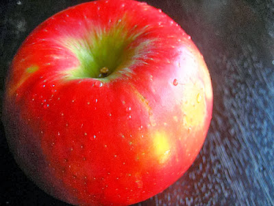
Apples
Calories : 95.
Graisse : 0,31.
Glucides : 25.13.
Fibre : 4.4.
Sucre : 18,91.
Protéines : 0,47
Graisse : 0,31.
Glucides : 25.13.
Fibre : 4.4.
Sucre : 18,91.
Protéines : 0,47

dattes séchées
Calories : 110
Protéine : 1 g.
Graisse : 0 gramme.
Glucides : 31 grammes.
Fibres : 3 g.
Sucre : 27 grammes
Protéine : 1 g.
Graisse : 0 gramme.
Glucides : 31 grammes.
Fibres : 3 g.
Sucre : 27 grammes

ORANGE
Énergie 72,4 calories
Protéine 1,45 grammes
Glucides 18,1 grammes
Fibres 3,7 g
Fer 0,154 milligrammes
Protéine 1,45 grammes
Glucides 18,1 grammes
Fibres 3,7 g
Fer 0,154 milligrammes
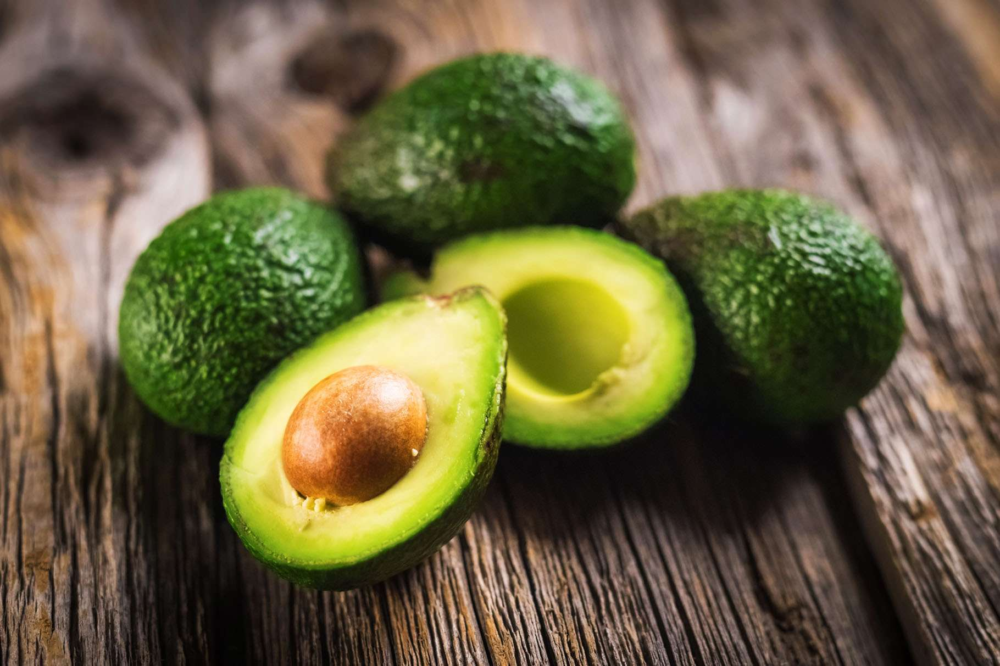
avocat
L'acide corporel actuel équivaut à 81 microgrammes.
Vitamine C : Fournit 17 % des besoins quotidiens de l’organisme,
soit 10 mg.
Remarque : E : 10 % du prix total 2,07 %.
Vitamine B6 : Fournit 13% des besoins quotidiens de l’organisme, soit
Vitamine C : Fournit 17 % des besoins quotidiens de l’organisme,
soit 10 mg.
Remarque : E : 10 % du prix total 2,07 %.
Vitamine B6 : Fournit 13% des besoins quotidiens de l’organisme, soit
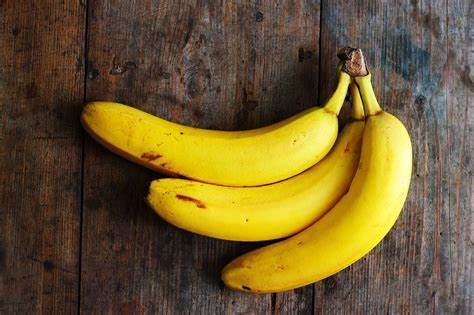
banan
Valeur pour
100 grammes
100 grammes
Calories 89
Lipides 0,3 g
Acides gras saturés 0,1 g
Cholestérol 0 mg
Sodium 1 mg
Potassium 358 mg
Glucides 23 g
Fibres alimentaires 2,6 g
Sucres 12 g
Protéines 1,1 g
Vitamine C 8,7 mg Calcium 5 mg
Fer 0,3 mg Vitamine D 0 IU
Vitamine B6 0,4 mg Vitamine B₁₂ 0 µg
Magnésium 27 mg
100 grammes
100 grammes
Calories 89
Lipides 0,3 g
Acides gras saturés 0,1 g
Cholestérol 0 mg
Sodium 1 mg
Potassium 358 mg
Glucides 23 g
Fibres alimentaires 2,6 g
Sucres 12 g
Protéines 1,1 g
Vitamine C 8,7 mg Calcium 5 mg
Fer 0,3 mg Vitamine D 0 IU
Vitamine B6 0,4 mg Vitamine B₁₂ 0 µg
Magnésium 27 mg
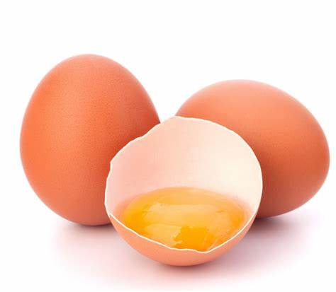
oeuf
Les nutriments suivants : os2
Énergie : 62,5 calories.
Protéine : 5,5 grammes.
Les paramètres sont : 4.2 et 1.4.
Éléments minéraux : 189 mots.
Calcium : 24,6 mg.
Taille : 0,8 min.
Magnésium : 5,3 mg.
Énergie : 62,5 calories.
Protéine : 5,5 grammes.
Les paramètres sont : 4.2 et 1.4.
Éléments minéraux : 189 mots.
Calcium : 24,6 mg.
Taille : 0,8 min.
Magnésium : 5,3 mg.

blanc de poulet
Calories : 128 calories.
Protéines : 26 grammes.
Graisse : 2,7 grammes.
Sodium : 44 mg.
Glucides : 0 gramme.
Fibres : 0 g.
Sucres : 0 grammes
Protéines : 26 grammes.
Graisse : 2,7 grammes.
Sodium : 44 mg.
Glucides : 0 gramme.
Fibres : 0 g.
Sucres : 0 grammes
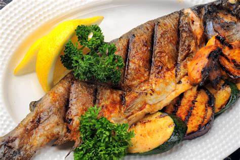
Baleine
Protéine : ...
Vitamine B12 :...
vitamine D: ...
fer: ...
Quantité recommandée :...
Poissons et polluants environnementaux :...
Vitamine B12 :...
vitamine D: ...
fer: ...
Quantité recommandée :...
Poissons et polluants environnementaux :...

Foie de poulet
Protéines 16,37 g
Matières grasses 4,28 g
Glucides 6,32 g
Calcium, Ca
Matières grasses 4,28 g
Glucides 6,32 g
Calcium, Ca
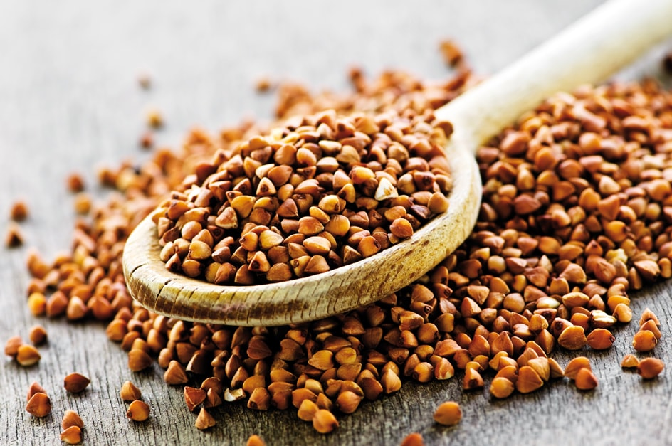
Sarrasin
Chaque 100 grammes de sarrasin contient :
Calories : 343 calories
Fibres alimentaires 10 g
Eau 9,75 grammes
Protéines 13,25 grammes
Fer 2,2 milligrammes
Calcium 18 milligrammes
Phosphore 347 milligrammes
Magnésium 231 milligrammes
Cuivre 1,1 milligrammes
Zinc 2,4 milligrammes
Sodium 1 milligramme
Potassium 460 milligrammes
Manganèse 1,3 milligrammes
Sélénium 8,3 microgrammes
Niacine 7,02 milligrammes
Vitamine B6 0,21 milligramme
Calories : 343 calories
Fibres alimentaires 10 g
Eau 9,75 grammes
Protéines 13,25 grammes
Fer 2,2 milligrammes
Calcium 18 milligrammes
Phosphore 347 milligrammes
Magnésium 231 milligrammes
Cuivre 1,1 milligrammes
Zinc 2,4 milligrammes
Sodium 1 milligramme
Potassium 460 milligrammes
Manganèse 1,3 milligrammes
Sélénium 8,3 microgrammes
Niacine 7,02 milligrammes
Vitamine B6 0,21 milligramme
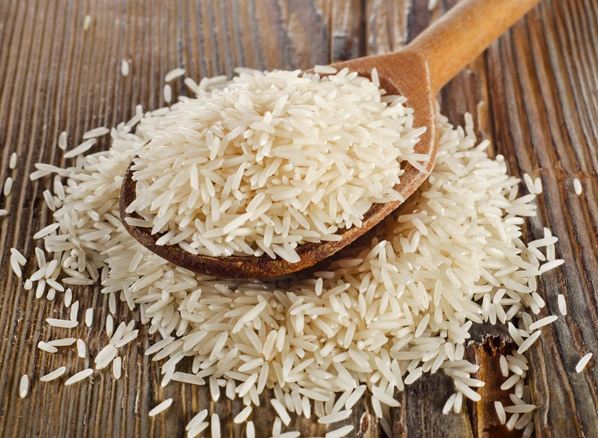
Riz
Fournir de l'énergie au corps Le riz est une source saine d'énergie pour le corps,
car il contient des glucides complexes.
Fournir au corps des fibres alimentaires...
Apporter au corps des vitamines...
Protection contre l'obésité...
Contribuer à la protection contre le cancer...
Augmente la fraîcheur de la peau...
Contribuer à la protection contre la maladie d'Alzheimer...
Avoir d'autres avantages
car il contient des glucides complexes.
Fournir au corps des fibres alimentaires...
Apporter au corps des vitamines...
Protection contre l'obésité...
Contribuer à la protection contre le cancer...
Augmente la fraîcheur de la peau...
Contribuer à la protection contre la maladie d'Alzheimer...
Avoir d'autres avantages
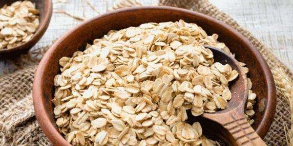
Flacon
Eau : 8%.
Protéines : 16,9 grammes.
Glucides : 66,3 grammes.
Sucre : 0 gramme.
Fibres : 10,6 grammes.
Graisse : 6,9 grammes
Protéines : 16,9 grammes.
Glucides : 66,3 grammes.
Sucre : 0 gramme.
Fibres : 10,6 grammes.
Graisse : 6,9 grammes
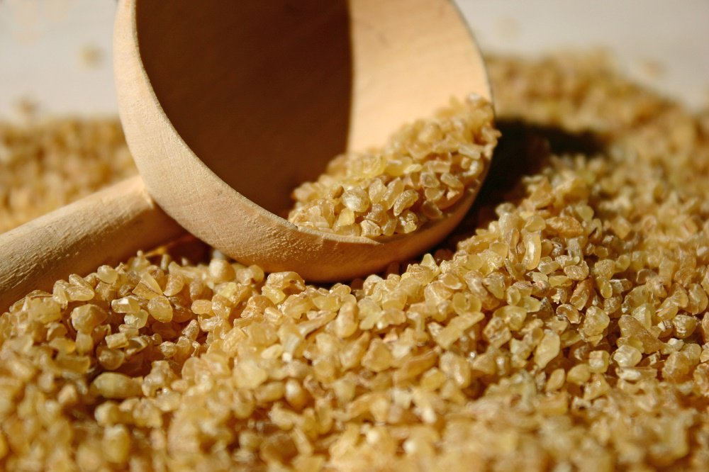
Boulgour
Les calories pour 100 grammes de boulgour cuit correspondent à 150 calories
Glucides 32 grammes
Protéines 4 g
Gras 1 g
Fibres alimentaires 1 g
Sodium 340 milligrammes
Glucides 32 grammes
Protéines 4 g
Gras 1 g
Fibres alimentaires 1 g
Sodium 340 milligrammes
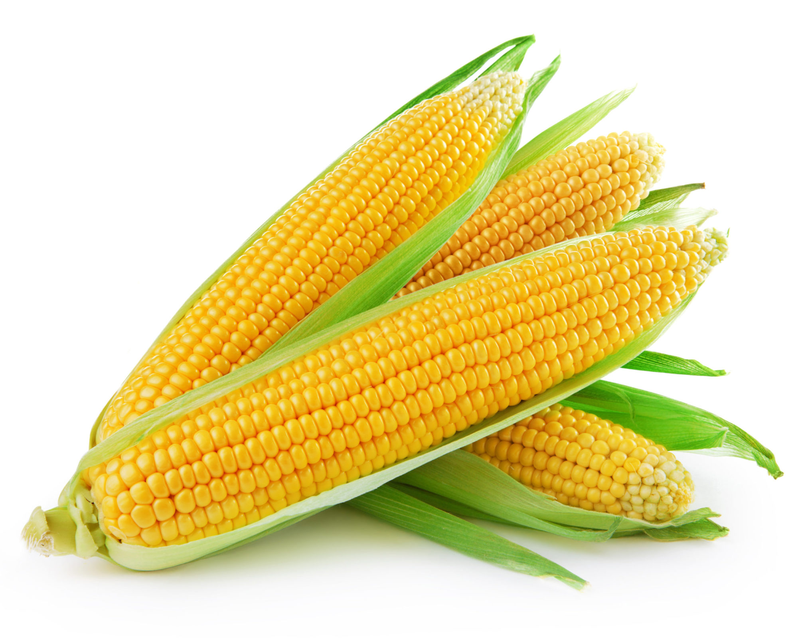
maïs
70-87% (glucides) d'amidon (amylose et amylopectine),
6-13% de protéines.
4% de matières grasses,
2-6% d'huile
1-3% de sucre
6-13% de protéines.
4% de matières grasses,
2-6% d'huile
1-3% de sucre
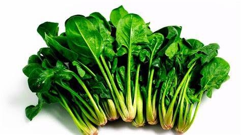
épinard
Calories : 23 calories.
Eau : 91,4 grammes.
Protéine : 2,86 grammes.
Graisse : 0,39 grammes.
Glucides : 3,63 grammes.
Fibres : 2,2 grammes.
Sucres : 0,42 grammes.
Calcium : 99 mg.
Eau : 91,4 grammes.
Protéine : 2,86 grammes.
Graisse : 0,39 grammes.
Glucides : 3,63 grammes.
Fibres : 2,2 grammes.
Sucres : 0,42 grammes.
Calcium : 99 mg.
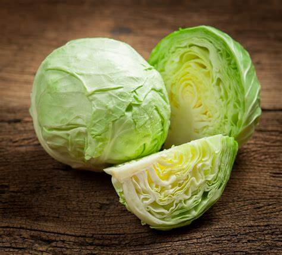
chou
Protéine 1,28 g
de matières grasses 0,1 g
de glucides 5,8 g
de calcium, Ca40 mg
de matières grasses 0,1 g
de glucides 5,8 g
de calcium, Ca40 mg
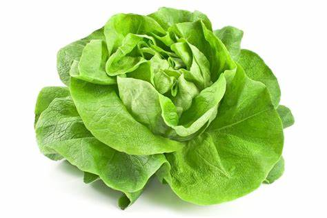
laitue
Amount Per 100 g100 g
saerat harariatun 14
libid 0.2
gdhuna mishbae 0
gkulisturul 0
mgsudyum 28
mgbutasyum 194
mgskiriat 2.9 g
'alyaf ghidhayiyati 1.3
gskiru 0.8
gbrutin 1.4 g
fitamin si9.2
mgkalsyumi36
mghdid0.9
mgfitamin di0
IUfitamin bi60.1
mgkubalamin 0
µgmighnisyumi13 mg
Web results
saerat harariatun 14
libid 0.2
gdhuna mishbae 0
gkulisturul 0
mgsudyum 28
mgbutasyum 194
mgskiriat 2.9 g
'alyaf ghidhayiyati 1.3
gskiru 0.8
gbrutin 1.4 g
fitamin si9.2
mgkalsyumi36
mghdid0.9
mgfitamin di0
IUfitamin bi60.1
mgkubalamin 0
µgmighnisyumi13 mg
Web results
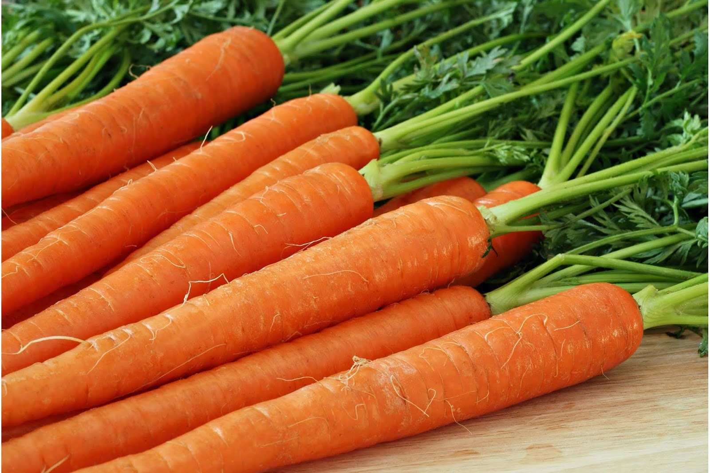
Carottes
Lipides 0,2
gGraisses saturées 0
gGraisses trans régulatrices 0
gCholestérol 0
mgSodium 69 mg
Potassium 320 mg
Sucres 10
gFibres alimentaires 2,8 g
Sucre 4,7 g
Protéines 0,9
gVitamine C5,9 mg
Calcium33 mgFer0,3 mg
Vitamine D0 IUVitamine B60,1 mg
Cobalamine0 µg
Magnésium12 mg
gGraisses saturées 0
gGraisses trans régulatrices 0
gCholestérol 0
mgSodium 69 mg
Potassium 320 mg
Sucres 10
gFibres alimentaires 2,8 g
Sucre 4,7 g
Protéines 0,9
gVitamine C5,9 mg
Calcium33 mgFer0,3 mg
Vitamine D0 IUVitamine B60,1 mg
Cobalamine0 µg
Magnésium12 mg

pomme de terre
Calories 85
Lipides 0,1
gGraisses saturées 0 g
Cholestérol 0 mg
Sodium 55 mg
Potassium 337 mg
Sucres 20 g
Fibres alimentaires 3 g
Sucre 4,2 g
Protéines 1,6 g
Vitamine C 2,4 mg
Calcium 30 mg
Fer 0,6 mg
Vitamine D0
IUVitamine B 60,2 mg
Cobalamine 0 µg
Magnésium 25 mg
Lipides 0,1
gGraisses saturées 0 g
Cholestérol 0 mg
Sodium 55 mg
Potassium 337 mg
Sucres 20 g
Fibres alimentaires 3 g
Sucre 4,2 g
Protéines 1,6 g
Vitamine C 2,4 mg
Calcium 30 mg
Fer 0,6 mg
Vitamine D0
IUVitamine B 60,2 mg
Cobalamine 0 µg
Magnésium 25 mg

Lentilles corail
Nutriments quantitatifs
Énergie 353 kcal
Protéines 25,8 g
Matières grasses 1,06 g
Glucides 60,08 g
Énergie 353 kcal
Protéines 25,8 g
Matières grasses 1,06 g
Glucides 60,08 g

Lentilles noires
Son effet sur le cœur Les fibres,
l'acide folique et le potassium sont des nutriments importants pour la santé cardiaque,
car l'augmentation de l'apport en fibres peut réduire
le taux de cholestérol. ...
Son effet sur la grossesse...
cancer ...
Combattre la fatigue...
Digestion et satiété
l'acide folique et le potassium sont des nutriments importants pour la santé cardiaque,
car l'augmentation de l'apport en fibres peut réduire
le taux de cholestérol. ...
Son effet sur la grossesse...
cancer ...
Combattre la fatigue...
Digestion et satiété
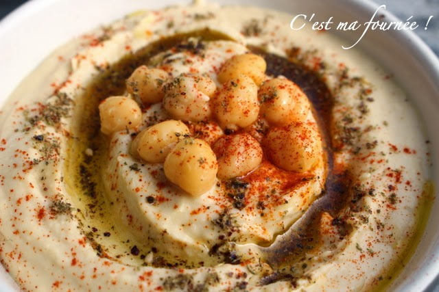
Houmous
Calories : 162 calories.
Protéines : 8,86 grammes.
Glucides : 27,42 grammes.
Fibres : 7,6 grammes.
Graisse : 2,59 grammes.
Calcium : 49 mg.
Fer : 2,89 mg.
Magnésium : 48 mg.
Protéines : 8,86 grammes.
Glucides : 27,42 grammes.
Fibres : 7,6 grammes.
Graisse : 2,59 grammes.
Calcium : 49 mg.
Fer : 2,89 mg.
Magnésium : 48 mg.
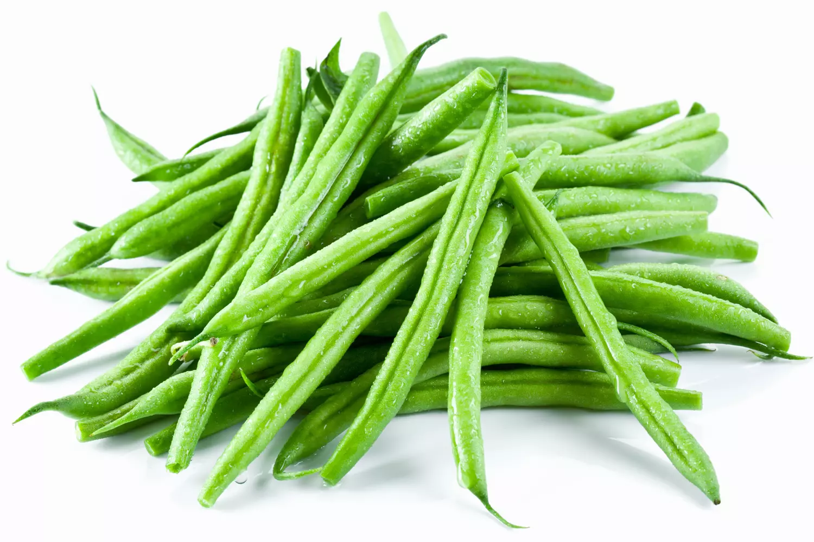
Haricots
Calories dans les haricots verts 341
calories Graisse totale 1,53 g
Fer 6,7 mg
Les glucides 58,29 g
Fibre 25 g
vitamine C 1,4 mg
Sucre 5,7 g
Vitamine A 15,9
microgrammes Protéine 26,12 g
Phosphore 421mg
Manganèse 1,626mg
Folate 423 microgrammes
calories Graisse totale 1,53 g
Fer 6,7 mg
Les glucides 58,29 g
Fibre 25 g
vitamine C 1,4 mg
Sucre 5,7 g
Vitamine A 15,9
microgrammes Protéine 26,12 g
Phosphore 421mg
Manganèse 1,626mg
Folate 423 microgrammes
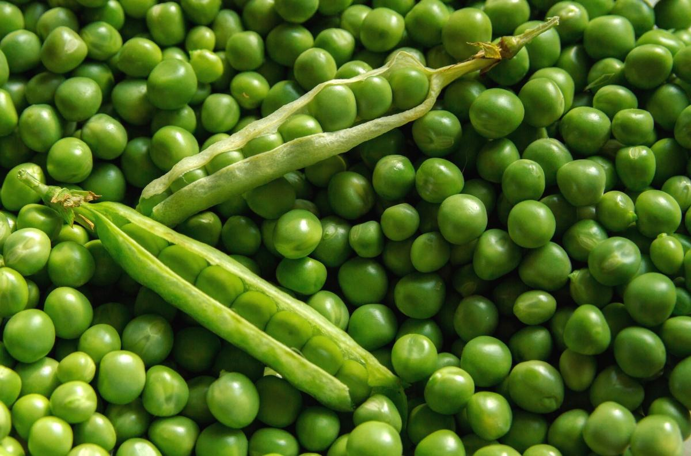
pois
Énergie 79
calories Protéines 5,62 grammes
Glucides 13,48 grammes
Fibres 4,5 g
Sucres 4,49 grammes
Fer 0,81 milligramme
Sodium 225 milligrammes
Vitamine C 6,7 milligrammes
Vitamine A 449 UI
calories Protéines 5,62 grammes
Glucides 13,48 grammes
Fibres 4,5 g
Sucres 4,49 grammes
Fer 0,81 milligramme
Sodium 225 milligrammes
Vitamine C 6,7 milligrammes
Vitamine A 449 UI

Haricots blancs
10,6 grammes
magnésium 184 mg
Calcium 110 mg
Fer 8,27 mg
Phosphore 424 mg
Sodium 16 mg
Protéines 23,52 grammes
Potassium 1112mg
Les glucide 60,03 grammes
Zinc 3,37mg
l'acide folique 633 microgrammes
Vitamine A 50 unités
magnésium 184 mg
Calcium 110 mg
Fer 8,27 mg
Phosphore 424 mg
Sodium 16 mg
Protéines 23,52 grammes
Potassium 1112mg
Les glucide 60,03 grammes
Zinc 3,37mg
l'acide folique 633 microgrammes
Vitamine A 50 unités